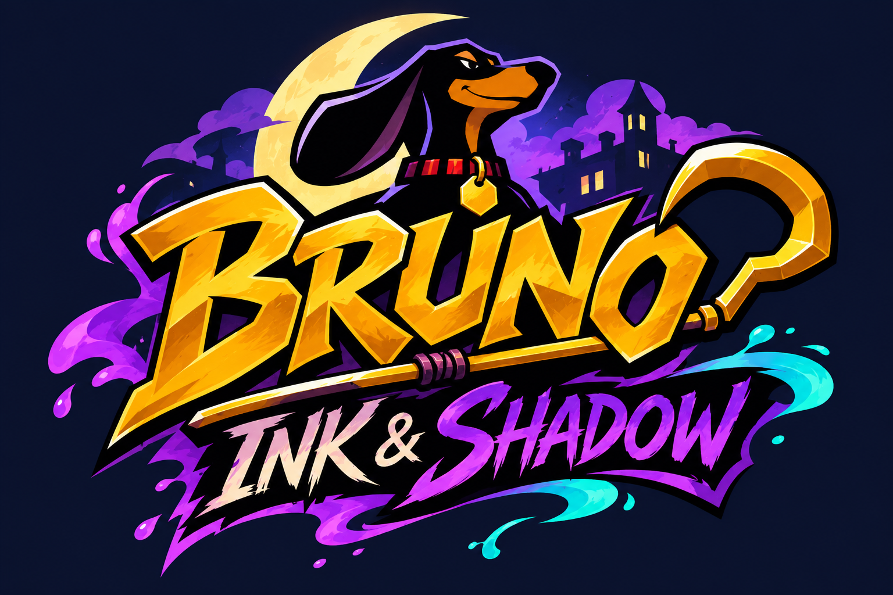

3D stealth/parkour ve stylu Sly Cooper 2 + 2D plošinovka ve stylu Rayman Origins. Godot 4.7 · Claude vyvíjí přímo v repozitáři, Tomáš testuje a schvaluje.
⏭️ Pak na řadě
Celá roadmapa →🌊 Vlny vývoje
Klikni na vlnu pro její úkoly📝 Naposledy v deníku
Celý deník →🌍 6 Kapitol — Open-Hub struktura (Sly 2 styl)
📖 Příběh & Komiksové cutscény („Živý komiks“)
2D panely s parallaxem · CS + EN bublinyProlog — Krádež štětce
Baron Kaňka ukradne Prastarý štětec a začne zavírat čtvrti i legendární mistry do živých obrazů. Bruno a Kiki vyrážejí po stopě fialového inkoustu.
Akt I — Hravé noční loupeže
V Zátoce Bublin a Měděném kaňonu Bruno osvobozuje první mistry, učí se ušní vrtulník, Rail Grinding a Jiskrový výstřel tenisákem.
Akt II — Masky & Chlad
Zrcadlový karneval a Zamrzlá knihovna zvážňují tón: iluze, tajné archivy a odhalení Baronova plánu přemalovat celé město v noční můru.
Akt III — Noir finále
Průnik Továrnou na barvy a finální bouřlivá noc v Inkoustové citadele. Dvoufázový 3D + 2D souboj s Baronem Kaňkou o osud všech obrazů.
🎯 4 typy Sidequestů v každém Open-Hubu
Znovuhratelnost, oblečky & 100 % dohráníKikiiny časovky po střechách
Rychlostní parkour tratě přes modré špičky, okapy a lana na čas s Kikiiným komentářem ve vysílačce.
Tenisáková střelnice
Najdi a přesným odpalem tenisáku holí rozezvuč 5 skrytých zvonů nebo terčů v každém hubu.
Zlodějské zakázky
Čistý stealth: tichá krádež klíče od pasu elitní hlídky holí bez spuštění poplachu.
Tajné 2D trhliny
Skryté inkoustové portály vedoucí do náročných Rayman 2D výzev — odměnou jsou tajné klece s oblečky a Zlaté tenisáky.
🕹️ Ovládání — klávesnice + myš · DualShock / Xbox · dotyk
translations.csv od 1. dne| InputMap Akce | PC (Klávesnice + Myš) | Gamepad (PS / Xbox) | Mobilní dotykový HUD |
|---|---|---|---|
move_left/right/forward/back | WASD / Šipky (fyzické klávesy – funguje i na QWERTZ) | Levá páčka | Virtuální joystick |
look_* | Myš (po kliknutí zachycená, Esc uvolní) | Pravá páčka | Tah prstem v pravé polovině |
jump | Mezerník (znovu = dvojskok, držet při pádu = ušní vrtulník) | ✕ / A | Tlačítko Skok |
sprint | Shift (držet) | R1 nebo R2 / RB nebo RT (držet; R2 jen když nemíříš) | Tlačítko Sprint |
sneak / sneak_toggle | Ctrl (držet) | L3 – stisk levé páčky (přepínač) | Podle vychýlení joysticku |
attack | Levé tlačítko myši / F | □ / X | Tlačítko Hůl (když není kotva v dosahu) |
action (přichycení) | E / prostřední tlačítko myši | ○ / B | Tlačítko Hůl (kotva v dosahu) |
aim + fire | Pravé tlačítko myši (držet) + levé tlačítko | L2 / LT (držet) + R2 / RT | — |
tennis (rychlý odpal) | Q | — | Tlačítko Tenisák |
pause | Esc | Options / Menu | Ikona pauzy |
debug_* | F3 = ladicí panel · L = jazyk · M = dotykový HUD | — | — |
🔄 Interaktivní diagram herní smyčky
Klikni na libovolný blok pro technický detail🌳 Interaktivní strom schopností
Vyber kapitolu pro zvýraznění jejích schopností🦊 Stavy Bruna (State Machine) — co už je ve hře
player/states/*.gd| Stav | Spouštěč | Chování | Verze |
|---|---|---|---|
Idle / Move | Páčka / WASD | Chůze na 2 nohách 4,5 m/s; plížení (L3 / Ctrl nebo slabá výchylka) 2 m/s | ✅ v0.2.0 |
Sprint | R1 / R2 / Shift | Hůl na záda, běh po čtyřech 9 m/s | ✅ v0.2.0 |
Air | ✕ / Mezerník | Skok ~1,7 m, dvojskok ~2,7 m, coyote time, jump buffer, kratší skok ťuknutím | ✅ v0.2.0 |
Glide | Držet skok při pádu | Ušní vrtulník – uši nad hlavou se točí, pád 2,5 m/s | ✅ v0.2.0 |
Perch | ○ / E u modré špičky | Magnetické přitažení obloukem, balancování; kotva podle směru pohledu kamery | ✅ v0.2.0 |
Attack | □ / levé tl. myši (až 3×) | Kombo 3 švihů s výpadem, auto-cíl, 3. švih = otočka; hit-stop + zatřesení | ✅ v0.2.0 |
AirAttack | □ ve vzduchu | Otočka s holí, malé nadlehčení, jednou za skok | ✅ v0.2.0 |
Aim | L2 / pravé tl. myši (držet) | Kamera přes rameno se přiblíží, úkroky 3 m/s; R2 / levé tl. = výstřel tenisáku | ✅ v0.2.0 |
Swing | Q / dotykové tlačítko tenisáku | Rychlý odpal tenisáku na zaměřovač | ✅ v0.2.0 |
Locked | Portál / cutscéna | Vstup ignorován – průlet do obrazu a zpět | ✅ v0.2.0 |
Climb · Crawl · LedgeHang | ○ u okapu / pod překážkou / u římsy | Šplhání, plazení (nízká kolize), ručkování | v0.2.1 |
WallSneak · PathFollow · HookSwing | ○ u zdi / lana / kruhu | Přitisknutí ke zdi, chůze po laně a rail grinding, houpání na háku | v0.2.1 |
🎨 Rayman 2D Platform Kit
7 .tscn scén| Scéna (.tscn) | Mechanika |
|---|---|
BouncyMushroom.tscn | Skákací houby & bubny s elastickým odrazem |
OneWayPlatform.tscn | Průchozí plošiny (skok zespodu, propad dolů) |
CrumblingInkPlatform.tscn | Rozpadající se plošiny v tekutém inkoustu |
WindCurrent.tscn | Větrné/parní proudy pro ušní vrtulník |
SwingRing.tscn | Houpací kruhy na zahnutou hůl |
WallRunSlide.tscn | Stěny na běh při sprintu & skluzavky |
RhythmPiston.tscn | Rytmické a pohyblivé písty |
🐾 Tabulka animací Bruna
3D + 2D set| Animace | Detail |
|---|---|
| Idle + Tenisák | Klid na 2 nohách; po 5 s pinkání tenisákem na čumáku |
| Chůze / Plížení | 2 nohy, přikrčený tichý krok u hlídek |
| Sprint (4 nohy) | Hůl na záda, dynamický běh po čtyřech |
| Dvojskok + Vrtulník | Otočka + roztočení dlouhých uší při plachtění |
| Magnet na špičky | Skok na modrou jiskru a balancování |
| Odpal tenisáku | Švih holí jako pálkou na cíl |
| Skok do obrazu | Inkoustový rozstřik a nájezd kamery do 2D |
🎨 Kompletní knihovna concept artu (30 obrázků)
Klikni na obrázek pro zvětšení · Hodnocení a poznámky se ukládají lokálně➕ Přidat záznam do deníku práce
📜 Časová osa vývoje (v0.1.0 → v0.1.7)
Nové záznamy se ukládají do prohlížeče✅ Rozhodnuto (v0.1.0 – v0.1.7)
- ✓Engine & Architektura: Godot 4 (GDScript, Jolt 3D, nativní 2D, State Machine).
- ✓Jazyky: Bilingvní vývoj od 1. dne — Čeština (CS) + Angličtina (EN) přes
.csv. - ✓Platformy & Ovládání: PC (klávesnice + myš), Gamepad i Mobilní dotykový HUD (jednotná
InputMap). - ✓Struktura 6 Kapitol: Fáze 1 (Zátoka Bublin, Měděný kaňon, Zrcadlový karneval) + Fáze 2 (Zamrzlá knihovna, Továrna na barvy, Inkoustová citadela).
- ✓Hrdina Bruno: Antropomorfní jezevčík, 2 nohy (plížení/boj) + 4 nohy (sprint), uši = vrtulník, obojek = HUD.
- ✓Parťačka Kiki & Šídlo: Drzá veverka v uchu + pilotka mechanického komára (mosty mezi světy).
- ✓Hůl & Tenisák: Hrot plnicího pera + kůstka; odpal neonového tenisáku + 1 Zlatý tenisák v levelu + idle pinkání po 5 s.
- ✓Úkryty, Interiéry & Sidequesty: Safe House v každé kapitole, 3D interiéry s inkoustovým střihem, 4 typy sidequestů.
- ✓Cutscény & Originalita: Sly 2 „Živý komiks“, čistý měsíc bez cizích log, vlastní Zlaté kapky inkoustu (ne Lumové).
- ✓Vizuály & Roadmapa: 30 concept artů ve
vis/+ podrobná Roadmapa 6 vln a 30 úkolů s checklisty. - ✓Technická architektura (
ARCHITECTURE.md): Godot 4.7.x stable, jedenCharacterBody3Dpro 3D i 2D (2.5D), plochý State Machine + systém kotev pro parkour, hybridní kamera s blendem dvou rigů, feature-based strukturagame/. - ✓Workflow od v0.1.7: Claude píše kód přímo v repozitáři a commituje do pracovních větví; Tomáš testuje v Godotu a schvaluje (merge). Antigravity & Gemini jen jako záloha a pro design/vizuály.
v0.2.0rozděleno na kroky A–F.
💡 Hlasování u nápadů & funkcí
📝 Moje poznámky a nápady navíc
Zahrnuto v tlačítku „Zkopírovat odpovědi pro AI“🧠 Start nového vlákna s Claudem (hlavní vývojář)
Zkopíruj na začátek nového chatu s Claudem – naváže na repozitář, ARCHITECTURE.md a aktuální krok Roadmapy.
⚡ Záložní kontext pro Antigravity
Rychlý kontext pro každé nové vlákno v Antigravity, aby okamžitě navázalo na strukturu projektu a aktuální verzi.